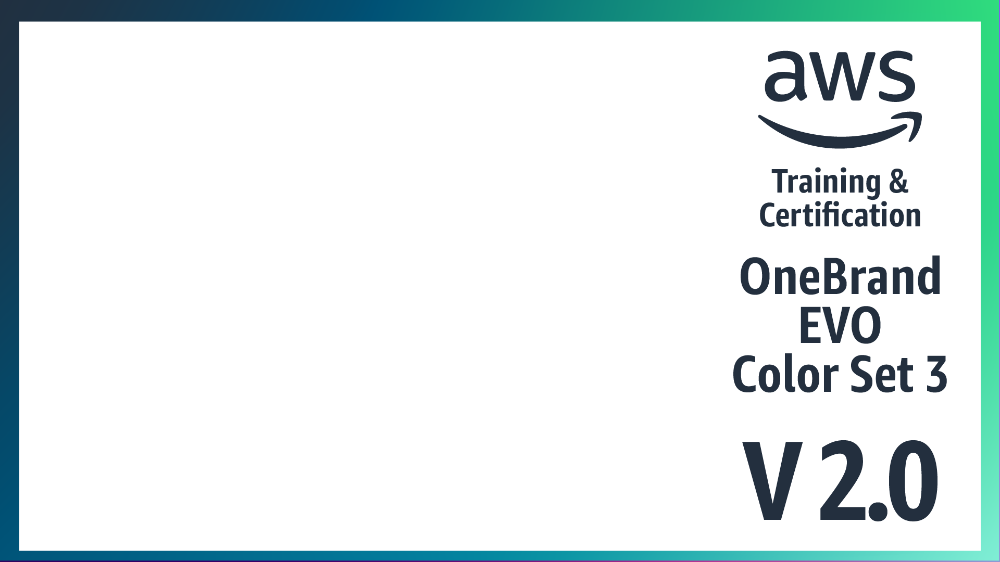
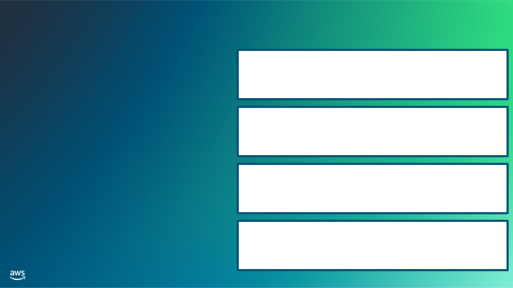
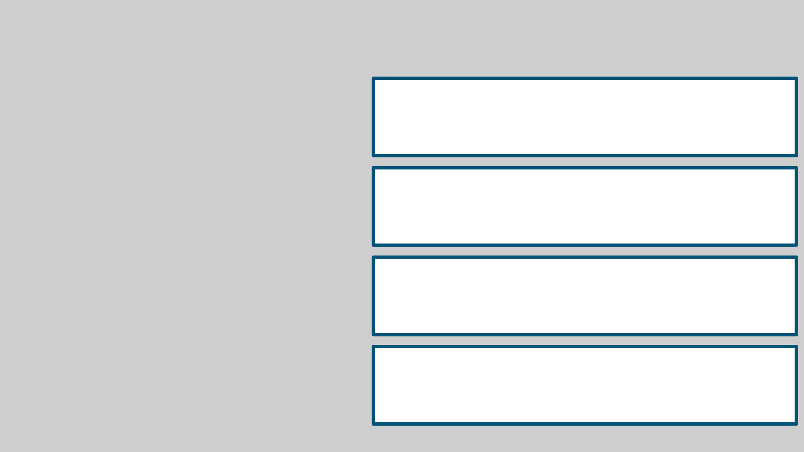

Bridging to Certification
Secure Public Cloud Services

AWS logo mark alongside the “Training & Certification” wordmark, used here as the course branding image for the title slide
John Jennings
Academic Year 2024-25
Bridging to Certification
AWS Academy Cloud Architecting
Introduction
Bridging to Certification
Module objectives
This module prepares you to do the following:
- Identify how to prepare for the AWS Certified Solutions Architect – Associate exam.
- Find resources to prepare for the exam.
Module overview
Presentation sections
- Solutions Architect – Associate certification domains
- Solutions Architect – Associate certification exam resources
- Additional resources
About AWS Certification exams
Exam content
- Content is divided into domains and task statements.
- Each domain is weighted.
- Questions include multiple choice and multiple response types.
Exam scoring
- Exams have a pass or fail designation.
- Unanswered questions are scored as incorrect.
- Each exam includes some unscored questions that do not affect your score.
About the Solutions Architect – Associate Certification
Recommended candidate for exam
- Performs a solutions architect role
- Has at least 1 year of hands-on experience designing cloud solutions that use AWS services
Knowledge and skills validated by the exam
- Ability to design solutions based on the AWS Well-Architected Framework
- Ability to complete the following tasks:
- Design solutions that incorporate AWS services to meet current business requirements and future projected needs.
- Design architectures that are secure, resilient, high-performing, and cost-optimized.
- Review existing solutions and determine improvements.
Solutions Architect – Associate Certification domains and task statements
Bridging to Certification
Solutions Architect – Associate content domains
- Domain 1 (30%): Design Secure Architectures
- Domain 2 (26%): Design Resilient Architectures
- Domain 3 (24%): Design High-Performing Architectures
- Domain 4 (20%): Design Cost-Optimized Architectures
Certification content domain 1 task statements
Design Secure Architectures (30%)
- 1.1: Design secure access to AWS resources.
- 1.2: Design secure workloads and applications.
- 1.3: Determine appropriate data security controls.
Certification content domain 2 task statements
Design Resilient Architectures (26%)
- 2.1: Design scalable and loosely coupled architectures.
- 2.2: Design highly available and/or fault-tolerant architectures.
Certification content domain 3 task statements
Design High-Performing Architectures (24%)
- 3.1: Determine high-performing and/or scalable storage solutions.
- 3.2: Design high-performing and elastic compute solutions.
- 3.3: Determine high-performing database solutions.
- 3.4: Determine high-performing and/or scalable network architectures.
- 3.5: Determine high-performing data ingestion and transformation solutions.
Certification content domain 4 task statements
Design Cost-Optimized Architectures (20%)
- 4.1: Design cost-optimized storage solutions.
- 4.2: Design cost-optimized compute solutions.
- 4.3: Design cost-optimized database solutions.
- 4.4: Design cost-optimized network architectures.
Solutions Architect – Associate Certification exam preparation resources
Bridging to Certification
AWS Certification resources
| https://aws.amazon.com/certification |
AWS Certification overview: Includes links to resources and information about each certification |
| https://aws.amazon.com/certification/certified-solutions-architect-associate |
AWS Certified Solutions Architect – Associate Certification: Includes details about the Solutions Architect – Associate exam with links to exam guide, sample questions, and available training |
Free exam readiness resources
- Exam Guide: PDF document that explains the test and the certification domains in detail. Appendix includes technologies and concepts that might appear on the exam, and in-scope and out-of-scope AWS services and features.
- Sample questions: PDF document with ten questions that demonstrate the format of the questions used on the exam. Includes rationales for the correct answers.
- AWS Certified Solutions Architect – Associate webinar: 3-hour virtual event that explores topic areas and how they map to architecting on AWS and to specific areas of study. Requires registration.
- Exam Prep Standard Course: AWS Certified Solutions Architect – Associate: Digital training course that walks you through each of the domains, explaining what you should know. Includes reviews of exam-style questions. Requires an AWS Skill Builder account.
- Exam Prep Official Practice Question Set: AWS Certified Solutions Architect – Associate: 20 exam-style questions delivered online in a format similar to the certification exam. Includes detailed feedback and recommended resources to help you prepare for your exam.
Exam readiness with an AWS Skill Builder subscription
- Enhanced digital training. Requires subscription.
- AWS Cloud Quest: Solutions Architect. Requires subscription.
- Official practice exam. Requires subscription.
Additional resources
Bridging to Certification
AWS Well-Architected Framework
Diagram illustrating the AWS Well-Architected Framework hub page, from which learners can reach the framework overview and its pillars
Centralized hubs for finding AWS resources
| AWS Architecture Center |
https://aws.amazon.com/architecture |
| AWS Documentation (services) |
https://docs.aws.amazon.com |
| AWS Frequently asked questions (FAQs) |
https://aws.amazon.com/faqs |
| Getting Started Resource Center |
https://aws.amazon.com/getting-started |
| AWS Builder Labs (Subscription-based hands-on labs) |
https://aws.amazon.com/training/digital/aws-builder-labs |
| AWS Ramp-Up Guides |
https://aws.amazon.com/training/ramp-up-guides |
Architecture Center resource categories
Best practices
- Organized by technology category
- Presented in the context of a project’s lifecycle steps
Video series
- Focused on practical use cases
- Presented by AWS Solutions Architects, AWS Partners, and customers
Libraries
- Organized into searchable and filterable collections
- Includes the following:
- Reference architectures
- Whitepapers
- Quick Starts
Suggested AWS Video Series for architecting
This is My Architecture
AWS Cloud customers and partners explain elements of their specific architectural solutions.
https://aws.amazon.com/architecture/this-is-my-architecture
Back to Basics
AWS Solutions Architects explain a specific architectural building block independent of a particular cloud solution.
https://aws.amazon.com/architecture/back-to-basics
AWS service documentation at docs.aws.amazon.com
- Select a service from the Product guides and references section.
- User guides, developer guides, and best practices are good sources for certification exam preparation.
- Helpful sections in these resources include the following:
- What is
- How it works
- Getting started

Graphic illustrating the structure of the AWS documentation site, docs.aws.amazon.com, showing how product guides are organized
AWS FAQ resources
Product-related
Select a product to navigate to its product page FAQ. Examples include the following:
- Amazon EC2 Auto Scaling FAQ
- Amazon S3 FAQ
Cloud computing concepts
Choose a question or follow the link to the Cloud Computing Concepts Hub to search for questions by topic.
- What is machine learning (ML)?
- What is Data Mining?
Cloud comparison tool
Choose a topic or follow the link to the Cloud Comparison tool to search for comparisons by topic. Examples include the following:
- ETL vs. ELT
- Artificial Intelligence vs Machine Learning
Getting Started Resource Center links
Hands-on Tutorials
Filter by technology category and tutorial type (Getting Started guides, How-To guides, and tutorials). Available directly at https://aws.amazon.com/getting-started/hands-on
Decision guides
Select a technology category to read the related guide.
https://aws.amazon.com/getting-started/decision-guides
AWS Builder Labs
- Browse the catalog of self-paced labs available.
- Self-paced labs run in an AWS environment similar to the labs in the course.
- Labs require a Skill Builder subscription.

Graphic representing the AWS Builder Labs catalog, where learners can browse self-paced, hands-on labs
AWS Ramp-Up Guides
Explore the following guides by role, solution, or industry area.
- Downloadable guides with curated links from AWS classroom and digital curricula, video library, and AWS Builder Labs
- The Solutions Architect Ramp-Up Guide includes specific resources from many of the resource types highlighted in this module.
- To access the Solutions Architect Ramp-Up Guide, see https://d1.awsstatic.com/training-and-certification/ramp-up_guides/Ramp-Up_Guide_Architect.pdf
Graphic representing the AWS Ramp-Up Guides resource, which compiles curated learning materials by role, solution, or industry
Module wrap-up
Bridging to Certification
Module summary
This module prepared you to do the following:
- Identify how to prepare for the AWS Certified Solutions Architect – Associate exam.
- Find resources to prepare for the exam.
Thank you
Corrections, feedback, or other questions?
Contact us at https://support.aws.amazon.com/#/contacts/aws-academy
Decorative closing graphic used on the final “Thank you” slide of the presentation